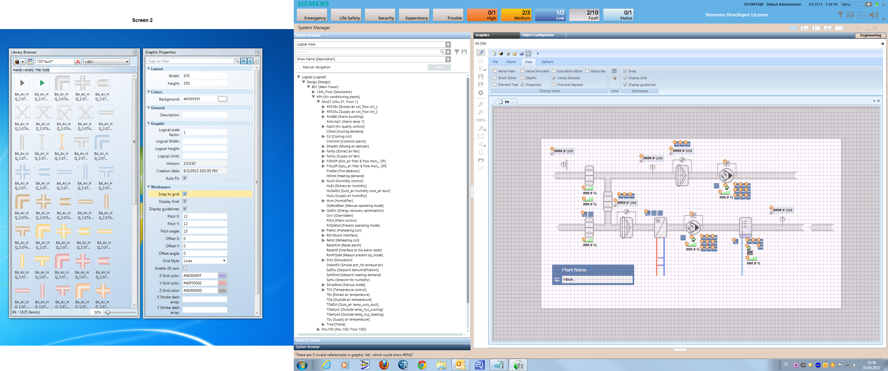
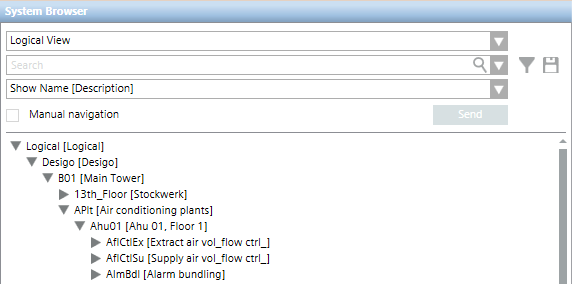
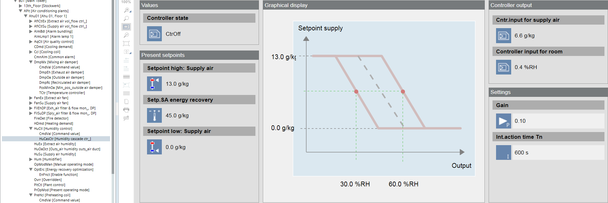

Before Starting Graphic Engineering
Please note the following in order to efficiently created Desigo CC graphics:
- Setting up a Workspace
- Work in only one view from the System Browser
- Object References with Scopes
- Limitations to drag-and-drop
- Use predefined graphics pages

NOTE:
User-defined changes are permanently lost if libraries are updated. No changes or supplements are permitted to standard libraries. This impacts system behavior (for example, operation). Use the Customize function to modify the library.
Setting up a Workspace
A two-screen solution is useful for graphic engineering. You can open the Graphics Editor on one screen and place the individual views on the second screen. You can save the desired desktop so that the same environment is displayed the next time you start up the Graphics Editor.

- System Manager is in Engineering mode.
- In System Browser, select Application View.
- Select Applications > Graphics.
- The Graphics Editor opens.
- Select the View tab.
- Select the Properties and Library Browser check boxes.
NOTE: You can add other properties at any time. - Select the Library dialog box and drag it to the second screen.
- Select the Properties dialog box and drag it to the second screen.
- Select the Options tab.
- Click Save present layout
 .
.
- The desktop is defined as per the figure above.
NOTE:
System Browser cannot be placed on the second screen.
Object View in System Browser
In Desigo CC, various object views are available in System Browser. You can also create additional user-defined views. The Logical View is however best suited for graphics engineering with Desigo. The object structure corresponds in this case to the Desigo application structure.
NOTE:
Work in only one view to ensure the object references work without a problem. We recommend the Logical View to engineer Desigo Automation.
- System Manager is in Engineering mode.
- In System Browser, select Logical view.
- For alphabetical display in System Browser, select Name [Description].
- The objects are displayed alphabetically by technical address.

Object References with Scopes
On a graphics page use only object references with the same scope. The graphic may not be fully displayed if using object references from different scopes.
Using Graphic Templates
Graphic templates do not require additional engineering. The graphic templates are assigned one object during data import based on the technical designation. Objects selected in the System Browser are displayed in the graphic.
